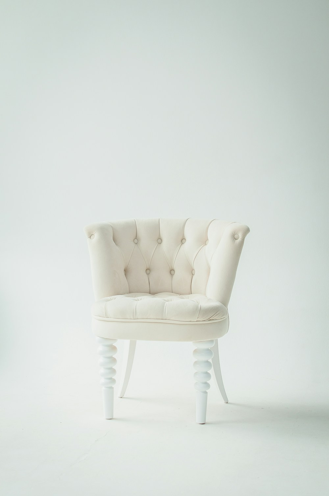

Lắng nghe & khám phá
Hiểu câu chuyện, người dùng và điều bạn muốn website thực sự làm được.
INDEPENDENT DESIGNER & DEVELOPER
Biến ý tưởng thành những website có cá tính.
Từ một trang giới thiệu nhỏ, đến trải nghiệm số
khiến người dùng muốn ở lại.
Thoughtful objects for everyday living.
Explore collection ↗
01 / SELECTED WORK
Đa dạng lĩnh vực, đồng nhất sự chỉn chu.
Một vài ý tưởng được kể bằng giao diện.
Bộ sưu tập dự án concept / demo.
Đang hiển thị 6 dự án.
design.
develop.
make it matter.
02 / ABOUT ME
Mình yêu việc kết nối thiết kế và công nghệ — làm ra những website vừa có dấu ấn riêng, vừa dễ dùng trong từng thao tác nhỏ.
Từ màu sắc, khoảng trắng đến tốc độ tải trang, mỗi lựa chọn đều có lý do. Mình bắt đầu bằng việc lắng nghe, cùng bạn tìm hướng đi, rồi chăm chút cho đến những chi tiết cuối.
03 / HOW I WORK
Một quy trình rõ ràng.
Để ý tưởng không chỉ nằm trên giấy.
Hiểu câu chuyện, người dùng và điều bạn muốn website thực sự làm được.
Tìm ngôn ngữ hình ảnh, sắp xếp nội dung và làm rõ trải nghiệm qua từng phiên bản.
Đưa thiết kế lên web, kiểm tra trên nhiều màn hình và tinh chỉnh từng tương tác.
GOOD THINGS START WITH A CONVERSATION
Một website mới, một lần làm lại,
hay chỉ là một câu “mình đang nghĩ…”